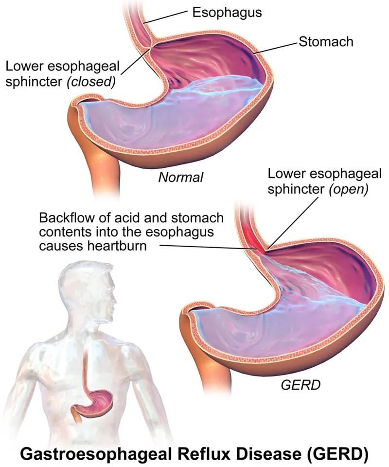

DX.3 — Sténose œsophagienne peptique
La sténose peptique rétrécit le bas œsophage après une œsophagite de reflux et provoque une dysphagie lente aux solidesS2S3. Elle se biopsie toujours avant d’être dilatée jusqu’à 15 mm au moins, puis un IPP au long cours prévient sa récidiveS2.
1. Définition
La Société britannique de gastroentérologie (BSG) définit, dans sa recommandation de 2018, la sténose peptique comme un rétrécissement bénin de l’œsophage qui complique une œsophagite de refluxS2. Elle la range parmi les sténoses simples lorsqu’elle reste courte, inférieure à 2 cm, concentrique, rectiligne et franchissable par un endoscope de diamètre normalS2. Le consensus de Lyon 2.0 de 2024 considère qu’une sténose peptique constitue à elle seule une preuve formelle de maladie de reflux gastro-œsophagien (RGO)S4.
2. Épidémiologie (Suisse, puis Europe)
Aucune incidence suisse n’est publiée ; la Suisse dispose en revanche d’une stratégie des Hôpitaux universitaires de Genève (HUG) qui fixe les repères suisses de soins primairesS1. La base britannique de médecine générale fournit l’incidence en population et les facteurs de risque, qui reste rare mais croît fortement avec l’âgeS3. La sténose peptique apparaît aussi comme la première cause d’impaction alimentaire dans les registres nordiquesS8.
Repères suisses : la stratégie HUG « Dyspepsie » (2022)
La dyspepsie motive environ 5 % des consultations de médecine générale ambulatoire, et deux tiers des cas restent fonctionnelsS1. La stratégie genevoise demande une endoscopie d’emblée en présence d’au moins un critère de gravité ou après 55 ans, certaines recommandations retenant 60 ansS1. Elle compte la dysphagie progressive et l’odynophagie parmi ces critères, ce qui place toute sténose suspectée dans la filière endoscopiqueS1.
Les antihistaminiques H2 ne sont plus disponibles en Suisse depuis 2021, après le retrait de la ranitidine par Swissmedic en septembre 2019S1. Le traitement antisécrétoire suisse repose donc entièrement sur les inhibiteurs de la pompe à protons (IPP)S1.
Incidence, terrain et évolution en Europe
| Chiffre | Population | Période | Source |
|---|---|---|---|
| 1,1 sténose œsophagienne pour 10 000 personnes-années | Soins primaires, Royaume-Uni | 1994–2000 | S3 |
| 68 % des sténoses d’origine peptique | Même cohorte | 1994–2000 | S3 |
| 11,1 récidives pour 100 personnes-années | Même cohorte | 1994–2000 | S3 |
| Sténose peptique nécessitant une dilatation chez 1 à 2 % des œsophagites de reflux | Synthèse britannique | 2018 | S2 |
Dans la cohorte britannique, l’incidence a baissé entre 1994 et 2000, en même temps que l’usage des IPP augmentait fortementS3. Un RGO, une hernie hiatale, un ulcère peptique, une dysphagie antérieure et une forte consommation d’alcool augmentaient le risque de sténoseS3. La mortalité des patients porteurs d’une sténose peptique restait comparable à celle des témoins appariésS3.
La BSG note que la proportion de 1 à 2 % reste stable depuis trois décennies, alors que l’incidence de l’œsophagite de reflux augmenteS2. Le nombre absolu de sténoses ne diminue donc pas forcément, même si chaque œsophagite traitée en produit moinsS2S3.
Sténose peptique et impaction alimentaire
En Islande, les sténoses œsophagiennes expliquaient 45 % des impactions alimentaires et la hernie hiatale 22 %, devant l’œsophagite à éosinophilesS8. L’impaction révèle donc souvent une sténose jusque-là tolérée par une adaptation progressive de l’alimentationS8. La conduite d’urgence de l’impaction relève du DX.3 ; ce cours traite la sténose qui la prépare.
3. Physiopathologie
La sténose naît au point où l’acide agresse la muqueuse : il faut donc d’abord connaître la barrière anti-reflux de la jonction œso-gastriqueS2S4. La chaîne causale va du reflux à l’œsophagite, puis à la cicatrice fibreuse qui réduit le calibreS2. Le calibre résiduel explique la dysphagie, et le tableau de corrélation relie chaque étape à son examen et à son traitementS2.
Base à connaître : la jonction œso-gastrique
Le sphincter œsophagien inférieur ferme normalement la jonction œso-gastrique ; lorsqu’il s’ouvre mal à propos, l’acide gastrique remonte dans le bas œsophage. La hernie hiatale accompagne souvent ce reflux, et la cohorte britannique l’associe à un risque accru de sténoseS3. Le dernier segment de l’œsophage reçoit ainsi l’essentiel de l’acide, d’où le siège distal habituel de la sténose peptiqueS2.
Jonction œso-gastrique normale et reflux. Cette planche en couleurs de la galerie médicale Blausen montre une coupe frontale de l’estomac et du bas œsophage, avec des légendes en anglais.

Sur la planche brute, le lecteur recherche d’abord seul la différence entre la jonction fermée en haut et la jonction ouverte en bas.
La copie annotée porte trois repères numérotés, que la lecture guidée explique un par un.
- Le sphincter inférieur fermé (closed) protège l’œsophage normal contre la remontée du contenu gastrique.
- Le sphincter ouvert (open) permet le passage de l’acide dans la lumière œsophagienne pendant le reflux.
- Le dernier segment de l’œsophage reçoit l’acide refoulé, et c’est là que naissent l’œsophagite puis la sténose.
- La planche ne montre ni le diaphragme ni une hernie hiatale, qui affaiblissent pourtant la barrière.
- Le schéma montre le reflux, pas la sténose : la fibrose se voit seulement en endoscopie.
Ce que l'image décide. Le médecin cherche une sténose au segment distal chez tout patient qui a un reflux ancien et une dysphagie, puis il la confirme par endoscopie avec biopsies.

Une sténose haute ou longue ne correspond donc pas au profil peptique et doit faire chercher une autre cause, notamment caustique, radique, éosinophile ou tumoraleS2S6.
Chaîne causale en quatre temps
| Temps | Ce qui se passe | Traduction clinique |
|---|---|---|
| Amorce | Le reflux acide répété franchit une barrière affaiblie, souvent par une hernie hiatale. | Le patient décrit des brûlures rétrosternales anciennes. |
| Développement | L’acide érode la muqueuse distale et entretient une œsophagite. | L’endoscopie montre des érosions classées selon Los Angeles. |
| Installation | La cicatrisation répétée dépose du tissu fibreux qui rétrécit la lumière. | La dysphagie aux solides s’installe lentement. |
| Maintien | L’inflammation résiduelle entretient la fibrose et la récidive après dilatation. | La dysphagie revient si le reflux n’est pas contrôlé. |
La BSG impose de contrôler l’inflammation par un IPP à forte dose avant de qualifier une sténose de réfractaire, car l’inflammation persistante entretient le rétrécissementS2. Une récidive de sténose malgré un IPP optimisé signe, selon le consensus de Lyon 2.0, un RGO réfractaire qui justifie des explorations fonctionnellesS4.
Calibre et dysphagie : pourquoi les solides bloquent
La BSG observe, pour les anneaux distaux, une dysphagie habituelle lorsque le diamètre atteint 13 mm ou moins, et rare au-delà de 20 mmS2. Le même principe vaut pour la sténose peptique : le bol solide bute lorsque la lumière devient inférieure à son propre diamètre, alors que les liquides passent encoreS2. La BSG fixe d’ailleurs l’objectif de la dilatation au passage aisé d’un dilatateur d’au moins 15 mmS2.
Le patient compense longtemps en mâchant davantage, en buvant pendant le repas ou en évitant la viande, ce qui retarde la consultation jusqu’à l’impactionS8.
Corrélation : perturbation, exploration, traitement
| Perturbation | Examen qui la montre | Traitement qui la corrige |
|---|---|---|
| Reflux acide pathologique | pH-métrie lorsque la preuve manqueS4 | IPP au long coursS2 |
| Œsophagite active | Endoscopie, classification de Los AngelesS4 | IPP à dose de cicatrisationaips-54380 |
| Fibrose et rétrécissement | Endoscopie, transit baryté si l’anatomie est complexeS2 | Dilatation par ballon ou bougieS2 |
| Cancer ou œsophagite à éosinophiles masqués | Biopsies de la sténoseS2 | Filière propre (DX.5, DX.6) |
| Sténose réfractaire | Échec de cinq séancesS2 | Corticoïde intralésionnel, prothèse temporaire, chirurgieS2S5 |
4. Démarche diagnostique
La démarche cherche d’abord ce qui menace : l’impaction complète et la perforation, puis le cancer qui imite une sténose bénigneS1S2. Elle sépare ensuite la sténose peptique des autres rétrécissements, car chaque cause impose un traitement différentS2S6. Un raisonnement pas à pas montre l’erreur la plus fréquente du débutant face à une dysphagie chez un patient qui a du reflux. La valeur des signes d’alarme explique pourquoi leur absence rassure, mais pas leur présenceS1.
Valeur diagnostique des signes d’alarme
Dans une population où le cancer gastro-œsophagien reste rare, l’absence de signe de gravité donne une valeur prédictive négative de 85 à 99 % pour ce cancerS1. La stratégie HUG autorise alors un traitement empirique par IPP de quatre à huit semaines au plus, associé aux mesures hygiéno-diététiquesS1. La dysphagie progressive figure au contraire parmi les signes de gravité, ce qui exclut l’essai empirique et impose l’endoscopieS1.
La recommandation européenne sur l’œsophagite à éosinophiles indique cette maladie chez jusqu’à 23 % des patients endoscopés pour dysphagieS6. Une sténose chez un adulte jeune et atopique doit donc faire biopsier l’œsophage à deux niveaux, même si un reflux coexisteS6.
Ce qui ne supporte aucun délai
Un patient porteur de sténose qui ne peut plus avaler sa salive présente une impaction complète, dont la conduite chronologique figure au DX.3. Après une dilatation, une douleur, un essoufflement, une fièvre ou une tachycardie doivent faire suspecter une perforationS2. Une douleur persistante impose alors une TDM avec contraste oral, car une radiographie thoracique normale n’exclut pas la perforationS2.
Diagnostics discriminants
| Diagnostic | Élément qui tranche | Piège | Conduite si positif |
|---|---|---|---|
| 🚩 Cancer de l’œsophage ou du cardia (DX.6) | Sténose irrégulière, amaigrissement, biopsiesS2 | Attribuer la dysphagie au reflux connu | Biopsies répétées, TDM ou échoendoscopieS2 |
| Sténose peptique | Sténose courte, distale, lisse, reflux documentéS2S4 | Dilater sans biopsier | Biopsies, IPP, dilatationS2 |
| Œsophagite à éosinophiles (DX.5) | Anneaux, sillons, au moins 15 éosinophiles par champS6 | Muqueuse d’aspect normal | Au moins six biopsies étagéesS6 |
| Anneau de Schatzki | Anneau mince à la jonction, dysphagie intermittenteS2 | Dilater un anneau asymptomatique | Une séance de 16 à 20 mm, puis IPPS2 |
| Achalasie (DX.7) | Dysphagie aux liquides et aux solides, lumière franchissable | Prendre une jonction serrée pour une sténose | Manométrie |
| Sténose caustique ou radique | Antécédent d’ingestion ou d’irradiationS2 | Perforation plus fréquente à la dilatation | Dilatation prudente en centre expertS2 |
La recommandation européenne indique que la dilatation reste sûre dans l’œsophagite à éosinophiles, avec un risque de perforation inférieur à 1 %S6. Elle ne traite cependant pas l’inflammation, qui relève du DX.5 ; confondre les deux causes revient donc à priver le patient de son traitement de fondS6.
Raisonnement pas à pas et erreur du débutant
Une femme de soixante-huit ans souffre de brûlures depuis vingt ans et avale mal la viande depuis six mois ; elle a perdu quatre kilos. Elle prend un IPP en automédication, ce qui a fait disparaître ses brûlures.
- Le médecin note une dysphagie progressive et une perte de poids, deux critères de gravité de la stratégie HUG qui imposent une endoscopieS1.
- Il ne conclut pas à une sténose peptique sur le seul passé de reflux, car un cancer distal donne le même tableauS1S2.
- Il demande une endoscopie avec biopsies de toute sténose, comme la BSG le recommande pour exclure un cancer et une œsophagite à éosinophilesS2.
- Il sait que l’IPP peut masquer un cancer, ce que l’AIPS de l’oméprazole rappelle à propos de la dysphagie et de l’amaigrissementaips-54380.
L’erreur classique consiste à augmenter l’IPP et à revoir la patiente dans trois mois sans endoscopie. Cette conduite retarde le diagnostic d’un éventuel cancer, alors que la dysphagie progressive suffit à poser l’indication d’endoscopieS1aips-54380.
5. Anamnèse ciblée et drapeaux rouges
L’anamnèse caractérise la dysphagie et le reflux, recherche le terrain et les médicaments et repère les drapeaux rouges qui imposent l’endoscopieS1. Chaque question porte une raison physiopathologique, car la réponse oriente vers la cause ou vers la gravitéS1S3.
Caractériser la dysphagie : typique ou non
| Élément | Forme typique de sténose peptique | Pourquoi |
|---|---|---|
| Type de dysphagie | Aux solides, viande et pain d’abord | Le bol solide bute sur une lumière fixeS2 |
| Évolution | Lente, sur des mois ou des années | La fibrose s’installe au rythme des poussées d’œsophagiteS2 |
| Siège ressenti | Rétrosternal bas | La sténose siège le plus souvent à la jonctionS2 |
| Reflux associé | Brûlures anciennes, parfois atténuées | La sténose complique une œsophagite de refluxS2 |
| Liquides | Passent normalement | Une gêne égale aux liquides évoque plutôt un trouble moteur (DX.7) |
| Amaigrissement | Absent ou modeste | Une perte de poids nette n’est pas typique et oriente vers un cancerS1 |
Une dysphagie rapidement progressive, une perte de poids ou une anémie sortent du profil peptique et imposent une recherche de cancerS1. La disparition des brûlures ne rassure pas, car la fibrose persiste même lorsque l’acide est contrôléS2.
Terrain et médicaments
| Question | Raison |
|---|---|
| Depuis quand avez-vous des brûlures ? | Un RGO ancien augmente le risque de sténoseS3 |
| Vous a-t-on parlé d’une hernie hiatale ? | La hernie hiatale augmente le risque de sténoseS3 |
| Combien d’alcool buvez-vous ? | Une forte consommation d’alcool augmente le risque de sténoseS3 |
| Avez-vous déjà eu un aliment bloqué ? | Une impaction révèle souvent une sténoseS8 |
| Avez-vous des allergies, de l’asthme ? | L’atopie oriente vers une œsophagite à éosinophilesS6 |
| Avez-vous reçu une radiothérapie ou avalé un caustique ? | Ces sténoses se dilatent avec plus de risquesS2 |
| Prenez-vous du clopidogrel ou un anticoagulant ? | L’oméprazole réduit l’effet du clopidogrel ; la dilatation exige un plan antithrombotiqueaips-54380S2 |
Drapeaux rouges et action immédiate
| 🚩 Drapeau rouge | Signification | Action |
|---|---|---|
| Salive impossible à avaler | Impaction complète | Filière d’urgence du DX.3 |
| Dysphagie progressive, odynophagie | Critère de gravité HUGS1 | Endoscopie avec biopsiesS1S2 |
| Perte de poids involontaire | Cancer possibleS1 | Endoscopie rapideS1 |
| Hématémèse, méléna, anémie ferriprive | Saignement digestifS1 | Endoscopie, bilan sanguinS1 |
| Vomissements persistants | Obstacle serréS1 | Endoscopie, hydratationS1 |
| Dyspepsie nouvelle après 55 ans | Critère d’âge HUG, 60 ans dans certaines recommandationsS1 | Endoscopie d’embléeS1 |
| Antécédent personnel ou familial de cancer digestif haut | Risque accru de cancerS1 | Endoscopie d’embléeS1 |
| Douleur ou fièvre après dilatation | PerforationS2 | TDM avec contraste oralS2 |
6. Examen physique ciblé, région par région
L’examen physique ne voit pas la sténose ; il mesure son retentissement et cherche les signes d’un cancer ou d’une complicationS1. Il suit l’ordre du chevet : état général et nutrition, bouche, cou et creux sus-claviculaires, puis abdomen.
État général et nutrition
Le médecin pèse le patient et compare au poids habituel, car une perte de poids involontaire constitue un critère de gravitéS1. Il recherche une pâleur, qui orienterait vers une anémie ferriprive par saignement de l’œsophagite ou d’un cancerS1. Il évalue l’hydratation chez le patient qui vomit ou n’avale plus que des liquidesS1.
Bouche
Il permet aussi d’écarter une cause oropharyngée, qui donnerait une gêne dès le début de la déglutition plutôt qu’un blocage rétrosternal.
Cou et creux sus-claviculaires
La palpation des creux sus-claviculaires recherche une adénopathie, que la stratégie HUG compte parmi les signes de gravitéS1. Une adénopathie dure et fixée oriente vers un cancer œsophagien ou gastrique, et non vers une sténose peptiqueS1. Après dilatation, une crépitation cervicale signe un emphysème sous-cutané et impose une TDMS2.
7. Approche syndromique
La sténose peptique associe deux syndromes que le médecin doit relier : un syndrome de dysphagie mécanique et un syndrome de refluxS2S4. Un troisième syndrome, l’altération générale, n’appartient pas à la sténose bénigne et oriente vers le cancerS1. La définition de chaque signe précède sa recherche à l’interrogatoire.
Trois syndromes
7.1 Syndrome de dysphagie mécanique
| Signes fonctionnels | Signes physiques | Mécanisme |
|---|---|---|
| Dysphagie aux solides, blocages, impaction | Aucun signe direct ; parfois perte de poids | Lumière fixe rétrécie par la fibroseS2 |
7.2 Syndrome de reflux gastro-œsophagien
| Signes fonctionnels | Signes physiques | Mécanisme |
|---|---|---|
| Pyrosis, régurgitations acides | Aucun signe physique spécifique | Reflux acide à travers une barrière affaiblieS4 |
7.3 Syndrome d’altération générale
| Signes fonctionnels | Signes physiques | Mécanisme |
|---|---|---|
| Amaigrissement, asthénie, anorexie | Pâleur, adénopathie, masse épigastrique | Tumeur maligne et saignement chroniqueS1 |
Le syndrome 7.3 retire à la sténose son caractère présumé peptique et impose des biopsies avant toute dilatationS1S2.
Définition des signes
| Signe | Définition | Recherche |
|---|---|---|
| Dysphagie | La personne sent que le bol s’arrête ou progresse mal après la déglutition | Interroger sur les aliments, le siège et l’évolution |
| Pyrosis | Une brûlure monte du creux épigastrique derrière le sternum | Interroger sur le lien avec les repas et la position couchée |
| Odynophagie | La déglutition provoque une douleur | Interroger pendant la prise d’aliments ou de comprimés |
| Régurgitation | Le contenu gastrique ou œsophagien remonte sans effort de vomissement | Interroger sur le goût acide ou alimentaire |
8. Diagnostic positif et critères
Aucune société savante ne propose de score diagnostique de la sténose peptique ; le diagnostic positif réunit une sténose endoscopique, des biopsies bénignes et une preuve de RGOS2S4. Les critères distinguent ce qui suffit de ce qui ne suffit pas, et la classification morphologique guide la technique de dilatationS2. La définition de la sténose réfractaire fixe le moment où le traitement change de niveauS2S5. Deux classifications de l’œsophagite coexistent dans les documents suisses, ce qui piège souvent le lecteur d’un compte renduS4S10.
Classifications endoscopiques : Los Angeles et Savary-Miller
Le consensus de Lyon 2.0 retient les œsophagites de grade B, C et D de Los Angeles comme preuves formelles de RGOS4. L’AIPS du pantoprazole emploie encore la classification de Savary-Miller : elle réserve 20 mg aux formes légères de stade 1 et 40 mg aux stades 2 à 3S10. Le médecin traduit donc le compte rendu endoscopique avant de choisir la dose, car les deux échelles ne se superposent pas terme à termeS4S10.
Ce qui suffit et ce qui ne suffit pas
| Élément | Valeur | Commentaire |
|---|---|---|
| Sténose distale avec œsophagite de Los Angeles B, C ou D | Suffit à prouver le RGO | Preuve endoscopique formelle selon Lyon 2.0S4 |
| Sténose peptique endoscopique | Suffit à prouver le RGO | Lyon 2.0 la range parmi les preuves formellesS4 |
| Biopsies sans cancer ni éosinophilie | Nécessaires avant de retenir la bénignité | La BSG biopsie toute sténoseS2 |
| Passé de brûlures | Ne suffit pas | Un cancer peut survenir sur un reflux ancienS1S2 |
| Amélioration sous IPP | Ne suffit pas | L’IPP peut masquer un cancerS9 |
| Exposition acide supérieure à 6 % à la pH-métrie sans IPP | Suffit à prouver le RGO | Utile si l’endoscopie ne montre pas d’œsophagiteS4 |
| Exposition acide inférieure à 4 % sans association symptomatique | Exclut le RGO | Fait chercher une autre cause de sténoseS4 |
Sténose simple ou complexe
| Type | Définition BSG | Conséquence |
|---|---|---|
| Simple | Courte, inférieure à 2 cm, concentrique, rectiligne, franchissable par un endoscope normalS2 | Une à trois séances suffisent habituellementS2 |
| Complexe | Au moins 2 cm, angulée, irrégulière ou très serréeS2 | Dilatation sous guidage, sans dilatateur aveugleS2 |
La BSG estime que 25 à 35 % des sténoses simples exigent plus de trois séances, et que cinq dilatations au plus suffisent chez plus de 95 % des patientsS2. Elle déconseille les dilatateurs de Maloney passés à l’aveugle dans une sténose complexe, car ils y perforent davantageS2.
Sténose réfractaire : définition et préalable
La BSG qualifie une sténose de réfractaire lorsqu’elle ne maintient pas un diamètre d’au moins 14 mm après cinq séances espacées d’une à deux semainesS2. Elle retient aussi l’échec à conserver le diamètre cible pendant quatre semaines une fois celui-ci atteintS2. Avant de retenir ce diagnostic, elle exige un contrôle optimal de l’inflammation par un IPP à forte doseS2.
9. Examens complémentaires
9.a L’œso-gastro-duodénoscopie (OGD) avec biopsies constitue l’examen de référence, car elle voit la sténose, en prélève la paroi et permet de la dilaterS2.
9.b Elle est demandée en première intention dès qu’une dysphagie progressive apparaît, sans essai préalable d’IPPS1.
9.c Le transit baryté précise une anatomie complexe, et la TDM ou l’échoendoscopie répondent à une suspicion tumorale persistanteS2.
9.d La pH-métrie et la manométrie interviennent lorsque la preuve de RGO manque ou que la dysphagie persiste malgré un calibre suffisantS4.
OGD avec biopsies : indication, prescription, interprétation
Indication. La BSG recommande de biopsier toute sténose afin d’exclure un cancer et une œsophagite à éosinophilesS2.
Prescription. Le médecin demande une OGD avec biopsies de la sténose et de l’œsophage sus-jacent, en signalant reflux, perte de poids et traitement antithrombotiqueS2S6.
Moment de la dilatation. Les biopsies peuvent précéder immédiatement la dilatation, mais la BSG préfère attendre leur résultat si la sténose est serrée ou suspecteS2. Si les biopsies restent négatives malgré un aspect suspect, elle demande de nouveaux prélèvements après TDM ou échoendoscopieS2.
| Résultat | Signification | Conduite |
|---|---|---|
| Sténose courte, lisse, distale, œsophagite d’amont | Sténose peptique probable | Biopsies, IPP, dilatationS2 |
| Anneau mince à la jonction | Anneau de Schatzki | Une séance de 16 à 20 mm s’il est symptomatiqueS2 |
| Anneaux multiples, sillons, exsudats blancs | Œsophagite à éosinophiles | Au moins six biopsies sur deux niveauxS6 |
| Sténose bourgeonnante, ulcérée, irrégulière | Cancer possible | Biopsies multiples, bilan d’extension (DX.6)S2 |
| Muqueuse de Barrett au-dessus de la sténose | Métaplasie liée au reflux | Biopsies et surveillance spécialiséeS4 |
Transit baryté
Indication. La BSG indique son intérêt pour repérer une hernie hiatale, un diverticule ou une sténose tortueuse avant une dilatation difficileS2.
Piège. Le transit montre un rétrécissement mais ne dit rien de sa nature ; il ne remplace jamais les biopsiesS2.
Alternative. Chez le patient qui ne peut pas avaler le contraste, l’endoscopie reste l’examen à privilégierS2.
Décision. Une grande hernie hiatale ou un œsophage tortueux découverts au transit font éviter les dilatateurs de Maloney, selon la BSGS2.
TDM et échoendoscopie
Indication. La BSG demande une TDM ou une échoendoscopie lorsque des biopsies négatives contrastent avec un aspect endoscopique suspectS2.
Après dilatation. Une douleur thoracique persistante impose une TDM avec contraste oral pour rechercher une perforationS2.
Piège. Une douleur thoracique transitoire reste fréquente après dilatation, mais sa persistance ne doit jamais être attribuée au geste sans imagerieS2.
pH-métrie : quand et comment l’interpréter
Indication. La pH-métrie sert lorsque la sténose existe sans œsophagite visible et que l’origine peptique reste à prouverS4.
Interprétation. Le consensus de Lyon 2.0 retient le RGO au-delà de 6 % de temps d’exposition acide sans IPP, et l’exclut en dessous de 4 % sans association symptomatiqueS4.
Zone grise. Les valeurs comprises entre 4 et 6 % restent non concluantes et exigent d’autres arguments cliniques ou techniquesS4.
Prescription. Lorsque le RGO n’est pas encore prouvé, Lyon 2.0 demande une mesure prolongée du pH après arrêt du traitement antisécrétoireS4.
10. Arbre décisionnel
L’arbre suit l’ordre des décisions au cabinet puis en endoscopie, en traitant d’abord ce qui menaceS1S2.
- Si la salive ne passe plus, alors le patient relève de la filière d’urgence de l’impaction, au DX.3.
- Si une dysphagie progressive, une perte de poids, une anémie ou une hémorragie apparaissent, alors le médecin demande une OGD rapide avec biopsiesS1.
- Si l’OGD montre une sténose, alors l’endoscopiste la biopsie et attend le résultat avant de dilater si elle est serrée ou suspecteS2.
- Si les biopsies sont bénignes et le RGO prouvé, alors le médecin associe dilatation jusqu’à au moins 15 mm et IPP au long coursS2S4.
- Si la dysphagie revient, alors il optimise l’IPP à forte dose avant toute nouvelle escaladeS2.
- Si le diamètre de 14 mm n’est pas maintenu après cinq séances, alors la sténose est réfractaire et relève d’un centre expertS2S5.
11. Prise en charge selon les recommandations suisses
11.A But. Le traitement vise une déglutition des solides sans blocage, avec un calibre d’au moins 15 mm, et la prévention de la récidive par le contrôle du refluxS2.
11.B Moyens. Il associe une dilatation endoscopique, soigneusement préparée, à un IPP au long cours, ici l’oméprazole ou le pantoprazoleS2. Les mesures hygiéno-diététiques complètent le traitement, et la sténose réfractaire relève d’un niveau spécialiséS1S2. La perforation après dilatation constitue l’urgence propre à ce diagnostic, et l’anneau de Schatzki suit des règles voisinesS2.
Urgence — perforation après dilatation : conduite chronologique
| Temps | Geste | Raison |
|---|---|---|
| Pendant le geste | Réinspecter l’œsophage si des symptômes apparaissent en salle | Recommandation BSGS2 |
| Heures 0 à 2 | Surveiller douleur, dyspnée, fièvre et fréquence cardiaque ; tester la déglutition d’eau | Signes de perforation selon la BSGS2 |
| Dès la suspicion | Arrêter toute prise orale, poser une voie veineuse, appeler le chirurgien | Éviter la contamination médiastinale |
| Dans l’heure | TDM avec contraste oral, sans se fier à une radiographie normale | Recommandation BSGS2 |
| Selon la brèche | Prothèse couverte temporaire ou réparation chirurgicale | L’ESGE admet la prothèse temporaire dans les perforationsS5 |
La douleur thoracique transitoire reste fréquente après dilatation, mais sa persistance impose l’imagerieS2. Le risque varie fortement selon la cause de la sténose, comme le montre le tableau ci-dessousS2.
| Type de sténose | Perforations rapportées par la BSG |
|---|---|
| Sténoses bénignes, audit britannique | 1,1 %, mortalité 0,5 %S2 |
| Sténoses malignes, même audit | 6,4 %, mortalité 2,3 %S2 |
| Sténoses peptiques, série de Hagel | Aucune perforationS2 |
| Sténoses caustiques | De 0,4 à 32 % selon les sériesS2 |
| Achalasie, dilatation pneumatique | 2 à 4 % dans la plupart des étudesS2 |
Anneau de Schatzki : une cause voisine
La BSG recommande de ne pas dilater un anneau découvert par hasard et sans symptômeS2. Elle recommande, pour l’anneau symptomatique, une seule séance de dilatation jusqu’à 16 à 20 mmS2. Elle propose aussi des biopsies pour exclure une œsophagite à éosinophiles, souvent associée aux anneauxS2.
Après dilatation, un IPP réduit la rechute de l’anneau selon la BSGS2. Un essai cité par la BSG a montré l’effet de l’oméprazole à 20 mg par jour contre placebo jusqu’à 48 mois, hors AIPSS2. L’incision électrochirurgicale de l’anneau constitue une alternative efficace à la dilatation, selon la même recommandationS2.
Préparer la dilatation : information, contre-indications, organisation
La BSG demande d’expliquer les bénéfices, les risques et la probabilité de plusieurs séances, en adaptant le discours à la cause, à la longueur et au diamètre de la sténoseS2. Le patient reçoit une information écrite et signe un consentement qui mentionne la perforation et son éventuel traitement endoscopique ou chirurgicalS2. Le médecin évoque aussi les alternatives, comme l’alimentation parentérale ou la chirurgie, lorsqu’elles s’appliquentS2.
| Élément | Règle BSG |
|---|---|
| Contre-indication | Perforation active ou incomplètement cicatriséeS2 |
| Prudence | Perforation récente guérie, chirurgie digestive haute récente, déformation cervicale, trouble de la coagulationS2 |
| Jeûne | Au moins six heures avant le gesteS2 |
| Équipe | Opérateur expérimenté, au moins deux assistants dont une infirmière formée, salle équipée de radiologieS2 |
| Protocole | Conduite écrite en cas de perforation, avec un chirurgien nomméS2 |
| Radioscopie | Inutile pour une sténose simple ; utile si la sténose est longue, angulée, multiple, radique ou caustiqueS2 |
| Rythme | Séances hebdomadaires ou bimensuelles jusqu’au passage aisé d’au moins 15 mmS2 |
Le médecin traitant prépare donc la demande en signalant les antithrombotiques, les troubles de la coagulation et les antécédents chirurgicaux, car ils changent l’organisation du gesteS2.
Dilatation endoscopique : technique et sécurité
| Temps | Geste | Raison |
|---|---|---|
| Avant | Biopsies, information sur les risques, plan pour les antithrombotiques | Exclure un cancer ; prévenir le saignementS2 |
| Sédation | Benzodiazépine et opioïde intraveineux au minimum ; propofol ou anesthésie générale selon la complexité | Recommandation BSGS2 |
| Instrument | Ballon ou bougie sur fil guide, d’efficacité égale | Trois essais randomisés sans différence à un anS2 |
| Calibre | Départ à 10 à 12 mm si la sténose est très serrée ; objectif d’au moins 15 mm | Recommandation BSGS2 |
| Progression | Paliers prudents ; la règle des trois paliers par séance reste sans preuve | Recommandation BSGS2 |
| Après | Surveillance d’au moins deux heures, test de déglutition d’eau, consignes écrites | Dépister la perforationS2 |
Un audit britannique a mesuré 1,1 % de perforations dans les sténoses bénignes, avec une mortalité de 0,5 %, contre 6,4 % dans les sténoses malignesS2. Une autre série n’a relevé aucune perforation dans les sténoses peptiques, alors que les sténoses malignes, radiques ou caustiques en concentraient huitS2. La BSG fixe un objectif inférieur à 1 % de perforations pour les sténoses bénignes, et un endoscopiste peu expérimenté perfore davantageS2.
Entre 40 et 60 % des sténoses peptiques ne demandent qu’une seule dilatation, et le besoin de redilatation culmine dans les deux années suivantesS2. Le patient doit donc connaître le retour possible de la dysphagie et consulter dès le premier blocageS2.
Mesures hygiéno-diététiques (stratégie HUG)
- Le patient évite la caféine, le chocolat, les aliments gras ou très épicés, les boissons gazeuses et les repas copieuxS1.
- Il perd du poids si nécessaire et limite l’usage chronique des anti-inflammatoires non stéroïdiens (AINS)S1.
- Il arrête le tabac et évite l’alcool, qui favorisent et aggravent le refluxS1.
- Il ne se couche pas dans les deux à trois heures suivant le dernier repas et surélève la tête du lit de 15 à 20 cmS1.
Ces mesures accompagnent l’IPP mais ne le remplacent pas, car seul l’IPP réduit le besoin de nouvelles dilatationsS1S2.
Sténose réfractaire : options spécialisées
| Option | Place | Source |
|---|---|---|
| IPP à forte dose | Préalable obligatoire avant de parler de réfractaire | S2 |
| Corticoïde intralésionnel avec dilatation | Sténose réfractaire inflammatoire, après optimisation antireflux | S2 |
| Prothèse entièrement couverte temporaire | Après échec des autres moyens, pendant quatre à huit semaines | S2S5 |
| Prothèse métallique en première intention | Déconseillée dans les sténoses bénignes | S5 |
| Auto-dilatation | Patients motivés porteurs de sténoses courtes et proximales | S2 |
| Chirurgie | Patients non répondeurs ou intolérants aux autres moyens | S2 |
La BSG rappelle que la fundoplicature provoque elle-même une dysphagie chez 5 à 43 % des opérés, moins souvent après une valve partielle qu’après un NissenS2. Le chirurgien pèse donc ce risque face au bénéfice antireflux avant d’opérer une sténose récidivanteS2.
L’ESGE préfère les prothèses entièrement couvertes aux partiellement couvertes dans les sténoses bénignes réfractaires, car elles s’enchâssent très peu et se retirent facilementS5. Après retrait d’une prothèse, la BSG rapporte jusqu’à 69 % de récidives, surtout lorsque la sténose dépasse 7 cmS2.
Oméprazole — Antramups® (n° 54380)
| Rubrique | Contenu de l’AIPS |
|---|---|
| Classe | Inhibiteur de la pompe à protonsS9 |
| Indications | Œsophagite de reflux, traitement au long cours et prophylaxie des récidives de l’œsophagite guérieS9 |
| Dose de cicatrisation | 20 mg une fois par jour pendant quatre semaines, prolongées de quatre semaines si nécessaireS9 |
| Œsophagite résistante | 40 mg une fois par jour ; guérison habituelle en huit semainesS9 |
| Prophylaxie des récidives | 10 mg une fois par jour, avec plus de récidives qu’à la dose standard ; augmentation possible à 20 à 40 mgS9 |
| Dysphagie | Comprimé dispersable dans l’eau ou un jus, à prendre dans les 30 minutes, sans mâcher ni broyerS9 |
| Contre-indication | Hypersensibilité à l’oméprazole ou aux benzimidazoles substituésS9 |
| Interactions | Association au clopidogrel déconseillée ; atazanavir et nelfinavir non recommandésS9 |
| Grossesse | Prudence, faute d’études contrôléesS9 |
| Allaitement | Effet peu probable sur le nourrissonS9 |
| Insuffisance rénale ou hépatique | Aucune adaptation rénale ; biodisponibilité et demi-vie augmentées en cas d’insuffisance hépatiqueS9 |
| Sujet âgé | Aucun ajustement posologique nécessaireS9 |
| Enfant (œsophagite de reflux) | Jusqu’à 5 mois : 0,5 mg/kg/jour, indication stricte ; au-delà de 5 mois et sous 20 kg : 1 mg/kg/jour, porté à 1,4 mg/kg/jour ; à partir de 20 kg : 20 mg, porté à 40 mg une fois par jour ; durée de 4 à 8 semaines au maximumS9 |
L’AIPS demande d’exclure un cancer avant de traiter un patient qui présente une dysphagie, un amaigrissement ou des vomissements persistants, car l’IPP peut masquer les symptômesS9. Au-delà de trois mois, elle signale une hypomagnésémie possible, et au-delà d’un an à forte dose un risque modérément accru de fracturesS9. Une néphrite tubulo-interstitielle peut survenir à tout moment et impose l’arrêt du traitementS9.
Pantoprazole — Pantozol® (n° 52710)
| Rubrique | Contenu de l’AIPS |
|---|---|
| Classe | Inhibiteur de la pompe à protonsS10 |
| Indications | Œsophagite de reflux légère à moyenne ; traitement au long cours et prévention des récidivesS10 |
| Dose de cicatrisation | 40 mg une fois par jour pendant quatre semaines, prolongées de quatre semaines si nécessaire ; dose doublée possibleS10 |
| Prévention des récidives | 20 mg une fois par jour, portés à 40 mg en cas de récidiveS10 |
| Voie intraveineuse | 40 mg une fois par jour si la voie orale est impossible, relais oral dès que possibleS10 |
| Contre-indication | Hypersensibilité au pantoprazole ou aux benzimidazoles substituésS10 |
| Grossesse | À éviter sauf nécessité absolueS10 |
| Allaitement | Passage dans le lait signalé ; décision selon le bénéficeS10 |
| Enfant | Non utilisé avant 12 ansS10 |
| Insuffisance hépatique sévère | La dose de 20 mg par jour ne doit pas être dépasséeS10 |
La stratégie HUG indique pour le pantoprazole une dose standard de 40 mg, une dose maximale de 80 mg et une dose préventive de 20 mg par jourS1S10. Ces valeurs concordent avec l’AIPS, qui autorise le doublement de la dose dans l’œsophagite résistanteS10.
Situations spéciales. Pendant la grossesse, l’AIPS de l’oméprazole impose la prudence, alors que celle du pantoprazole exclut son emploi sauf nécessité absolueS9S10. Chez le sujet âgé, l’incidence de la sténose croît fortement, et la recherche d’un cancer prend une place plus grandeS1S3. Chez l’enfant, l’AIPS de l’oméprazole fixe une dose par kilo jusqu’à 20 kg, alors que celle du pantoprazole exclut son emploi avant 12 ansS9S10. Chez le patient sous clopidogrel, l’AIPS de l’oméprazole déconseille l’association, car elle réduit l’activation du clopidogrelS9.
11.C Surveillance. Le médecin réévalue la dysphagie, le poids et la tolérance de l’IPP, et il dose le magnésium lors d’un traitement prolongé associé à un diurétique ou à la digoxineS9. Une récidive de dysphagie impose une nouvelle endoscopie plutôt qu’une simple hausse de l’IPP, car la cause peut avoir changéS1S2.
11.D Pronostic et sortie. Le pronostic vital reste comparable à celui de la population générale, mais la récidive atteint 11,1 pour 100 personnes-annéesS3. Après dilatation, le patient sort lorsque les critères de sortie sont réunisS2.
Critères de sortie après dilatation
- Le patient a été surveillé au moins deux heures après le gesteS2.
- Il boit de l’eau sans douleur ni gêneS2.
- Il ne présente ni douleur persistante, ni dyspnée, ni fièvre, ni tachycardieS2.
- Il reçoit des consignes écrites qui décrivent les signes de perforation et le numéro à appelerS2.
- L’IPP au long cours est prescrit, et le rendez-vous de résultat des biopsies est fixéS2.
- Il dispose des coordonnées du service de garde, à appeler en cas de douleur thoracique, d’essoufflement ou de malaise, comme la BSG le demandeS2.
- Il connaît le plan des séances suivantes, hebdomadaires ou bimensuelles, jusqu’au passage aisé d’un calibre d’au moins 15 mmS2.
12. Prévention
Prévention primaire. Le traitement efficace de l’œsophagite de reflux prévient la sténose, comme le suggère la baisse d’incidence observée avec la diffusion des IPPS3.
Prévention secondaire. L’endoscopie demandée dès la dysphagie progressive dépiste la sténose avant l’impaction et distingue la sténose bénigne du cancerS1S2.
Prévention tertiaire. L’IPP au long cours après dilatation réduit le besoin de nouvelles séances, alors que les antihistaminiques H2 restent inefficacesS2.
Si la sténose récidive malgré un IPP optimisé, le consensus de Lyon 2.0 parle de RGO réfractaire et recommande une pH-impédancemétrie sous traitementS4. Cet examen distingue un reflux persistant, qui relève d’une escalade antireflux, d’une autre cause de dysphagie qui relève d’un autre diagnosticS4.
Dans la cohorte britannique, l’IPP prolongé était associé à un risque relatif de récidive de 0,6, avec un intervalle de confiance qui incluait la valeur 1S3. Ce résultat observationnel reste donc compatible avec l’absence d’effet, alors que la recommandation de la BSG repose sur des essais de meilleure qualitéS2S3.
13. Points clés
- Toute sténose de l’œsophage se biopsie, car un cancer ou une œsophagite à éosinophiles peut prendre l’aspect d’une sténose peptiqueS2.
- Une dysphagie progressive impose une endoscopie d’emblée, sans essai préalable d’IPP, selon la stratégie HUGS1.
- La dilatation vise un calibre d’au moins 15 mm, et l’IPP au long cours prévient la récidiveS2.
- Une douleur persistante après dilatation impose une TDM avec contraste oral, même si la radiographie est normaleS2.
- Une sténose devient réfractaire seulement après cinq séances sans maintien de 14 mm, sous IPP optimiséS2.
14. Pièges et questions fréquentes à l'examen fédéral suisse
Chaque question reprend une confusion fréquente et renvoie au point qui porte la réponseS2.
| Question | Réponse | Raison |
|---|---|---|
| Une femme de 70 ans sous IPP a une dysphagie progressive : faut-il doubler l’IPP ? | Non, il faut une endoscopie avec biopsies | Critère de gravité HUG ; l’IPP peut masquer un cancer (point 4)S1S9 |
| Peut-on dilater une sténose sans biopsie si le patient a un reflux connu ? | Non | La BSG biopsie toute sténose (point 9)S2 |
| Quel antisécrétoire prescrire après dilatation en Suisse ? | Un IPP au long cours | Les anti-H2 sont inefficaces et retirés du marché suisse (point 12)S1S2 |
| Quel calibre vise la dilatation ? | Au moins 15 mm | Objectif BSG (point 11)S2 |
| Une douleur thoracique persiste deux heures après la dilatation, la radiographie est normale : que faire ? | Une TDM avec contraste oral | La radiographie n’exclut pas la perforation (point 9)S2 |
| Après deux séances, la dysphagie revient : la sténose est-elle réfractaire ? | Non | Il faut cinq séances et un IPP optimisé (point 8)S2 |
| Un patient sous clopidogrel a besoin d’un IPP : lequel éviter ? | L’oméprazole | L’AIPS déconseille l’association (point 11)S9 |
| Une sténose peptique suffit-elle à prouver un RGO ? | Oui | Preuve formelle selon Lyon 2.0 (point 8)S4 |
| Un patient jeune, atopique, a une sténose et un reflux : les biopsies de la seule sténose suffisent-elles ? | Non, au moins six biopsies sur deux niveaux | Une œsophagite à éosinophiles reste possible (point 4)S6 |
| Combien d’heures de surveillance après une dilatation simple ? | Au moins deux heures, avec test de déglutition d’eau | Dépistage de la perforation (point 11)S2 |
Sources
Toutes les sources ont été consultées le 12.11.2026 (Europe/Zurich).
- [S1] Mbadu Mbuzi E, Weber IP, Bastid C, Gillabert C, Humair JP (Service de médecine de premier recours et Service de gastro-entérologie et hépatologie, Hôpitaux universitaires de Genève, HUG). Stratégie : Dyspepsie. HUG, 2022. https://www.hug.ch/sites/interhug/files/2022-10/strategie_dyspepsie_06.10.2022.pdf
- [S2] Sami SS, Haboubi HN, Ang Y, et al., Siersema PD (British Society of Gastroenterology, BSG). UK guidelines on oesophageal dilatation in clinical practice. Gut 2018;67(6):1000-23. doi:10.1136/gutjnl-2017-315414. https://pmc.ncbi.nlm.nih.gov/articles/PMC5969363/
- [S3] Ruigómez A, García Rodríguez LA, Wallander MA, Johansson S, Eklund S (Centro Español de Investigación Farmacoepidemiológica, Madrid ; base britannique GPRD). Esophageal stricture: incidence, treatment patterns, and recurrence rate. American Journal of Gastroenterology 2006;101(12):2685-92. doi:10.1111/j.1572-0241.2006.00828.x (résumé). https://pubmed.ncbi.nlm.nih.gov/17227515/
- [S4] Gyawali CP, Yadlapati R, Fass R, et al., dont Fox MR (Université de Zurich), Zerbib F, Roman S. Updates to the modern diagnosis of GERD: Lyon consensus 2.0. Gut 2024;73(2):361-71. doi:10.1136/gutjnl-2023-330616. https://pmc.ncbi.nlm.nih.gov/articles/PMC10846564/
- [S5] Spaander MCW, van der Bogt RD, Baron TH, et al. (Société européenne d’endoscopie digestive, ESGE). Esophageal stenting for benign and malignant disease: ESGE Guideline – Update 2021. Endoscopy 2021;53(7):751-62. doi:10.1055/a-1475-0063 (résumé des recommandations). https://pubmed.ncbi.nlm.nih.gov/33930932/
- [S6] Lucendo AJ, Molina-Infante J, Arias Á, et al., dont Schoepfer AM (CHUV) et Straumann A (Swiss EoE Clinics). Guidelines on eosinophilic esophagitis: evidence-based statements and recommendations for diagnosis and management in children and adults (UEG, EAACI, ESPGHAN, EUREOS). United European Gastroenterology Journal 2017;5(3):335-58. doi:10.1177/2050640616689525. https://pmc.ncbi.nlm.nih.gov/articles/PMC5415218/
- [S8] Gretarsdottir HM, Jonasson JG, Björnsson ES (Hôpital universitaire national d’Islande). Etiology and management of esophageal food impaction: a population based study. Scandinavian Journal of Gastroenterology 2015;50(5):513-8. doi:10.3109/00365521.2014.983159 (résumé). https://pubmed.ncbi.nlm.nih.gov/25704642/
- [S9] Swissmedic, information professionnelle (AIPS) Antramups® (oméprazole), n° 54380, Cheplapharm Schweiz GmbH, mise à jour juin 2026. https://files.refdata.ch/simis-public-prod/MedicinalDocuments/c695b6ab0e8b4db7b83323fe7cf9bc6d-fr.html
- [S10] Swissmedic, information professionnelle (AIPS) Pantozol® 20/40/- i.v. (pantoprazole), n° 52710, Takeda Pharma AG, mise à jour septembre 2026. https://files.refdata.ch/simis-public-prod/MedicinalDocuments/f2deedcff1104532a3aa1c99232c3658-fr.html
Le contenu reprend les sources citées ; il n’a pas été validé cliniquement par un médecin.